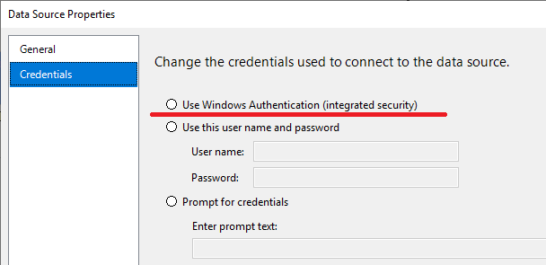
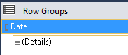
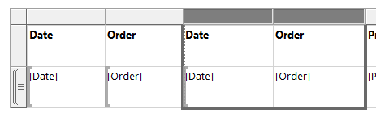

Feladat 1: Táblázatos riport¶
A feladat közösen megoldott.
Nyisd meg a checkoutolt git repository-ban a reportserver.sln fájlt. Ez egy üres Report Server típusú projekt, amelyet Visual Studio-ban fejlesztünk.
A Report Server projekt elsősorban úgynevezett Report Definition (.rdl) fájlokból áll, amelyek definiálják a riport előállításához szükséges adatforrásokat (lekérdezéseket), és a kinézet sablonját, amit adatokkal feltöltve kapjuk az eredmény riportot. A neve onnan ered, hogy ezeket a riportokat nem csak a fejlesztői gépen lehet lefuttatni, hanem egy un. Report Server-re publikálhatóak, ahonnan a vállalat megfelelő üzleti szereplői mindig friss riportokat kérhetnek, az aktuális adatok alapján.
Ezen a laboron nem tudjuk megmutatni a Report Server-t. Ennek csupán technikai okai vannak, a Report Server telepítés után kézi konfigurációt igényel, amit a laborokban megfelelő jogosultság nélkül nem tudunk megtenni. Ezért csak a Visual Studio-ban fogjuk látni a riportot.
Hozzuk létre az első Report Definition fájlt.¶
-
Solution Explorer-ben jobb klikk a Reports-ra és Add > New Item.

-
A sablonok közül válasszuk a Report lehetőséget. Nevezzük el Sales Orders.rdl-nek, majd nyomjunk rá az Add-re. Ekkor megnyílik a Report Designer, ahol az új .rdl fájlt láthatjuk Design nézetben.

A Report Designer a fejlesztőfelületünk. Két nézete van: Design és Preview. Emellett a Report Data panel is megnyílik, itt lehet definiálni az adatforrásokat. Ha megvagyunk az adatforrások megadásával, a Design fülön tudjuk a riportot vizuálisan megtervezni, majd ha már kellőképpen előrehaladtunk a riport készítésével, a Preview fülön tudjuk kipróbálni.
Adatforrás (data source) beállítása¶
Az adatforrás definálja, a riport adatai honnan származnak. A mi esetünkben ez a korábban lérehozott SQL Server adatbázis lesz.
-
A Report Data panelen New > Data Source. A neve legyen "AdventureWorks2014".

-
A megjelenő űrlapon válasszuk a Microsoft SQL Server típust és a connection string mező melletti gombra kattintva adjuk meg ismét az adatbázis elérését
- Server name:
(localdb)\mssqllocaldb - Authentication:
Windows Authentication - Select or enter database name:
AdventureWorks2014
- Server name:
-
OK-ézzuk le a dialógusokat. Majd nyissuk meg újra a Data Source tulajdonságait (jobb egérrel és Data Source Properties), és ellenőrizzük a Credentials fület, mert a Visual Studio néha "elfelejti" a beállítást. Az alábbi checkbox-nak kell kijelölve lennie:

Adathalmaz (data set) megadása¶
Ahhoz, hogy riportokat készíthessük, az adatforráshoz adathalmazokat (dataset) is meg kell adnunk. Ez gyakorlatilag egy lekérdezést fog jelenteni az adatforrás felé.
-
A Report Data panelen válasszuk a New > Dataset opciót. Nevezzük el a datasetet "AdventureWorksDataset"-nek. Data source-ot a legördülő menüből tudunk választani, használjuk az előzőleg elészítettet, és alkalmazzuk az alábbi beállításokat:

-
Írjuk be a következő Query-t.
SELECT soh.OrderDate AS [Date], soh.SalesOrderNumber AS [Order], pps.Name AS Subcat, pp.Name as Product, SUM(sd.OrderQty) AS Qty, SUM(sd.LineTotal) AS LineTotal FROM Sales.SalesPerson sp INNER JOIN Sales.SalesOrderHeader AS soh ON sp.BusinessEntityID = soh.SalesPersonID INNER JOIN Sales.SalesOrderDetail AS sd ON sd.SalesOrderID = soh.SalesOrderID INNER JOIN Production.Product AS pp ON sd.ProductID = pp.ProductID INNER JOIN Production.ProductSubcategory AS pps ON pp.ProductSubcategoryID = pps.ProductSubcategoryID INNER JOIN Production.ProductCategory AS ppc ON ppc.ProductCategoryID = pps.ProductCategoryID GROUP BY ppc.Name, soh.OrderDate, soh.SalesOrderNumber, pps.Name, pp.Name, soh.SalesPersonID HAVING ppc.Name = 'Clothing'Ha megvagyunk, nyomjuk meg a Refresh fields gombot.
A query-t elvileg vizuálisan is összekattinthattuk volna (a Query Designer segítségével), de az a felület elég ódon, és lassan is töltődik be.
A többi fülön most nincs dolgunk, kattintsunk az OK-ra.
Táblázatos riport készítése (5p)¶
Most, hogy megvan a kapcsolatunk az adatbázis felé, és a lekérdezést is megírtuk, elkezdhetünk riportokat gyártani. A riport nem más, mint a lekérdezés eredménye megjelenítve táblázatokban, diagramokban.
-
Nyissuk meg a Toolbox panelt, ha még nem látszana (View menüben megtalálható).
-
Válasszuk ki a Table eszközt, majd a Design fül középső részén elhelyezkedő üres, fehér téglalapra "rajzoljunk" egy táblázatot, mintha csak egy négyszöget rajzolnánk Paintben:

-
Váltsunk vissza a Report Data panelre, és nyissuk le az AdventureWorksDataset-et.

Ha ez üres vagy nem nyitható le, általában az a baj, hogy a dataset létrehozásakor nem nyomtuk meg a Refresh Fields gombot. Ezt még nem késő megtenni: jobb kattintás a dataseten > Dataset properties, majd a megjelenő ablakban nyomjuk meg a Refresh Fields gombot.
-
A Date mezőt húzzuk rá az imént "rajzolt" táblázat első oszlopára. Ilyesmi eredményt kell kapjunk:

A második sorban látható
[Date]jelöli a kiértékelendő kifejezést, míg az eső sorban látható "Date" felirat lesz az oszlop fejléce a riportban – ez utóbbit át is írhatjuk. -
Az előbbi módszerrel húzzuk be a második oszlopba az Order, a harmadikba a Product mezőt. A Qty mezőt is húzzuk be a jobb szélső oszlop szélére úgy, hogy felengedés előtt egy + jelet lássunk az egérkurzor alatt, és egy függőleges kék vonalat a táblázat szélén. Így egy új, negyedik oszlopba fog kerülni a mező. Ugyanígy eljárva húzzuk be a LineTotal mezőt is ötödik oszlopnak.

-
Ezzel el is készült az első riportunk. Nézzük meg a Preview fülön. Elsőre kicsit lassan töltődik be, erre számítsunk. A továbbiakban már gyorsabb lesz! Ellenőrizd, hogy a Neptun kódod megjelenik-e! (Ha nem, kifelejtettél az előkészítő lépések közül egyet. Menj vissza, és pótold!)

Az elkészült riportot például kinyomtathatjuk, vagy exportálhatjuk több féle formátumba (Word, Excel, PowerPoint, PDF). Jelen állapotában azért van rajta még mit csiszolni, pl. a végösszeg mezőnél nincs jelölve a valuta, és az értéket is bőven elég lenne 2 tizedesjelre kerekítve megmutatni. A dátum formázása és az oszlopok szélessége sem az igazi.
-
Menjünk vissza a Design fülre, és a táblázatunkban kattintsunk jobb egérgombbal a
[Date]kifejezésen, majd válasszuk a Text Box Properties opciót. Itt a Number fülön válasszuk a Date kategóriát, és válasszunk ki egy szimpatikus dátumformátumot.
-
A
[LineTotal]kifejezésen jobb klikkelve az előbbivel analóg módon a Text Box Properties-t kiválasztva formázzuk Number alatt Currency-ként az összeget.
-
A táblázat fejléc sor fölötti szürke téglalapok szélei fölé mozgatva az egeret a szokásos átméretező kurzor ikonokkal találkozhatunk. (Kb. mintha Excelben vagy Wordben próbálnánk táblázatot méretezni.) Ennek segítségével méretezzük át kicsit szélesebbre a táblázatot, és esetleg vegyük szűkebbre a Qty és Line Total oszlopokat a többihez képest.
Végül vastagítsuk ki a fejléc sor feliratait. Ehhez jelöljük ki a teljes sort a bal szélén található szürke négyzetre kattintva, majd a fenti eszköztáron kattintsunk a Bold gombra

Ha ránézünk a Preview fülre, ilyesmit kell látnunk:

BEADANDÓ
Amennyiben folytatod a következő feladattal, a képernyőkép készítést itt kihagyhatod.
Készíts egy képernyőképet a report előnézetéről a preview fülön. A képet a megoldásban f1.png néven add be. A képernyőképen a Visual Studio ablaka, és azon belül a riport előnézete látszódjon. Ismét ellenőrizd, hogy a Neptun kódod látható-e!
Csoportosítás és összegzés (5p)¶
A riport jelenleg ömlesztve tartalmazza az adatokat. Ezek eladási adatok, adott termékekből adott napon eladott mennyiség. Rendezzük csoportokba az adatokat.
-
Térjünk vissza a Design fülre. Győződjünk meg róla, hogy a táblázatunk alatt látjuk a Row Groups panelt – ha nem lenne ott, jobb klikkeljünk a dizájn felületen, és a View menüben pipáljuk ki a Grouping opciót.
-
A Report Data panelről húzzuk a Date mezőt a Row Groups panelre, azon belül is a (Details) sor fölé.

A táblázatunk megjelenése a következőképpen fog változni:

-
Húzzuk az Order mezőt is a Row Groups panelre a Date és a (Details) közé.

-
A csoportként megadott elemeknek automatikusan létrehozott oszlopokat a táblázatban a rendszer. Mivel már korábban is felvettük őket, ezért most kétszer is szerepelnek; töröljük őket. A felettük található szürke téglalapra kattintva jelöljük ki a jobb oldali Date és Order oszlopokat, és töröljük ki őket (jobb kattintás és Delete Columns).

Az új Date oszlop formátuma ezzel visszaállt az eredeti formátumra, de a Text Style Properties segítségével újra be tudjuk állítani.)
Ha most megnézzük a Preview fület, láthatjuk, hogy az általunk megadott szempontok szerint (és az általunk megadott sorrendben) csoportosításra kerülnek a riport sorai

-
Váltsunk vissza Design nézetre. Kattintsunk jobb egérgombbal a
[LineTotal]cellára, és válasszuk az Add Total opciót. Ezzel az egyes Order-ekhez (amik mentén csoportosítottunk) meg fog jelenni a rendelések összege. Ehhez alapból nem rendelődik címke, de beírhatunk egyet: bal gombbal kattintsunk a megfelelő üres cellába, és írjuk be: "Order Total"
-
CTRL billentyűt nyomva tartva kattintsunk az Order Total cellájára, majd a tőle jobbra levő két cellára is, hogy kijelöljük őket, és a Format menüből válasszunk új háttérszínt nekik.

-
Az eredményt szokás szerint megnézhetjük a Preview fülön:

-
Készítsünk napi összegzést is!
- Váltsunk vissza Design nézetre
- Jobb klikk az
[Order]cellán, válasszuk az Add Total > After lehetőséget. - Az
[Order]cella alatt megjelenik egy "Total" feliratú cella. Kattintsunk bele, és írjuk át "Daily Total"-ra. - Válasszuk ki ezt a cellát, és mellette a másik hármat (pl. a CTRL nyomvatartása mellett végigkattintgatva őket), majd adjunk nekik valamilyen háttérszínt (Format > Background color).
-
Mivel az adatbázisban egy naphoz nagyon sok megrendelés is tartozhat, a Preview fülön akár 4-5 oldalt is le kell görgetni, mire megpillantjuk munkánk gyümölcsét:

BEADANDÓ
Készíts egy képernyőképet a report előnézetéről a preview fülön. A képet a megoldásban f1.png néven add be. A képernyőképen a Visual Studio ablaka, és azon belül a riport előnézete látszódjon az összegző sorokkal együtt (lapozz, ha szükséges!). Ismét ellenőrizd, hogy a Neptun kódod látható-e!